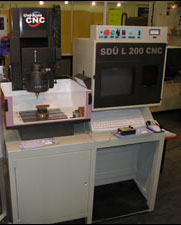
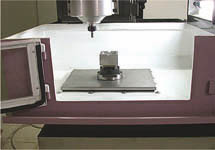
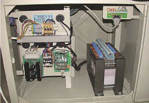
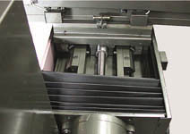

|
SDÜ
CAD/CAM Araþtýrma ve Uygulama Merkezi ile AJAN Elektronik
Servis San. ve Tic. Ltd. Þti. tarafýndan ortaklaþa tasarlanýp
üretilen Türkiye'nin tamamen yerli ilk eðitim amaçlý CNC freze
tezgahý satýþa sunulmuþtur. Milli Eðitim Bakanlýðý'na baðlý
teknik okullar ile üniversitelerin meslek yüksek okullarý
ve mühendislik bölümlerinde kullanýlmasý hedeflenen bu tezgah,
eðitim amaçlý olmasýna raðmen çeþitli alanlarda üretim bandýnda
da faaliyet verebilecek özelliktedir:
Prototip Dik Ýþleme Merkezi, SDÜ-LX-200
Tabla ölçüleri: 430x325 mm
Y-Hareketi: 150 mm
Z-Hareketi: 200mm
Ýþ Mili Devri: 300 dev/dk
Ýþ Mili Motor Gücü: 1 kw
Maksimum parça aðýrlýðý: 10 kg
Tezgahla ilgili daha kapsamlý teknik bilgi bu sayfanýn sonunda
bulunmaktadýr.
Konuyla
ilgili yerel bir gazetede çýkan haberler ise aþaðýda verilmiþtir:
Demokrat
Gazetesi, 22 Mayýs 2002
Süleyman Demirel Üniversitesi 'SDÜ L200-CNC' Tezgahý
Üretti
Ýlk üretilen tezgah 9. Cumhurbaþkaný Süleyman Demirel tarafýndan
Milli Eðitim Bakanlýðý'na armaðan edilecek...
Üniversite
sanayi iþbirliði çerçevesinde Süleyman Demirel Üniversitesi
ile Ajan Elektronik Ltd. Þti. tarafýndan tasarlanan ve üretilen
SDÜ L 200-CNC tezgahý eðitim modelinin ilk üretiminin öðenci
kullanýmýna sunulmak üzere Milli Eðitim Bakanlýðý'na armaðan
edilmesi amacýyla, 26 Mayýs 2002 günü Ankara Atatürk Kültür
Merkezi'nde düzenlenecek törenin hazýrlýklarý hýz kazandý.
Edinilen
bilgiye göre ilk üretilen CNC tezgahýnýn Milli Eðitim Bakanlýðý
adýna Bakan Metin Bostancýoðlu'na armaðaný, 9. Cumhurbaþkanýmýz
Sayýn Süleyman Demirel tarafýndan yapýlacak.......
Demokrat
Gazetesi, 25 Ocak 2002
Süleyman Demirel Üniversitesi'nde SDÜ-LX 2000 tipi bilgisayar
destekli torna ve freze tezgah üretime baþladý. Milli Eðitim
Bakanlýðý ile anlaþma saðlanýrsa bu tezgahlar Teknik okullarda
da öðrencilerin hizmetine sunulacak.
Süleyman
Demirel Üniversitesi'nden bir ilk daha. Türkiyenin en hýzlý
geliþim gösteren Üniversiteleri arasýnda ilk sýralarda yer
alan SDÜ þimdi de teknolojik açýdan son derece önemli olan
bilgisayar tasarýmlý ve destekli torna ve freze tezgah üretimine
baþladý...
(Bu haberler www.cadcam.sdu.edu.tr/basin_cadcam.htm
adresinden alýnmýþtýr)
Daha
fazla bilgi için:
Tel: (246) 211 16 73
SDÜ CAD/CAM merkezi ÇÜNÜR Kampüsü, ISPARTA
www.cadcam.sdu.edu.tr
www.cadcam.sdu.edu.tr/pro_dik_isleme.htm
www.ajancnc.com
CNC SDÜ L200 TEZGAHI TEKNÝK ÖZELLÝKLERÝ:
MAKSÝMUM
ÝÞLEME BOYUTLARI:
X Ekseni: 200mm
Y Ekseni: 150mm
Z Ekseni: 150mm.
ÝÞ
TABLASI
Baðlama Yüzeyi 300x250mm.
"T" Kanal Sayýsý 3x12mm.
Tabla Yükleme Kapasitesi 50kg.
HAREKETLÝ
BAÞLIK
Devir 10-2400 rpm. (Opsiyonel 6000rpm.)
Baðlama Sistemi Pens (min0,5 maks 16mm) DIN 6499
Ýþ Mili Pozisyonlama var.
ÝLERLEME
HIZLARI
X Ekseni 6-6000 mm/dak.
Y Ekseni 6-6000 mm/dak.
Z Ekseni 6-6000 mm/dak.
HIGH SPEED fonksiyonu var.
MOTOR
GÜÇLERÝ
X,Y,Z Eksen Motorlarý 1hp.
Ýþ Mili Motoru 2hp.
HASSASÝYET
Pozisyonlama hassasiyeti 0,01 mm.
Çözünürlük 0,001mm.
Eksen hareketleri Ayný anda 3 eksen eþ zamanlý hareket edebilme.
TEZGAH
BOYUTLARI
(BoyxEnxYükseklik) 1200x960x1650mm
Kütle: 500Kg.
Tezgah Gövdesi Döküm
KIZAK VE MÝLLER
Kayýt Kýzak Mekanizmasý. Masuralý bilyeli V tipi kayýt kýzak
Eksen Tahrik Milleri Bilyeli vidalý miller
TEZGAHIN
YAZILIMI
Yazýlýmýn Dili Türkçe
Simülasyon Özelliði Önceden similasyon izleme özelliði
Program girdileri Her türlü CAD/CAM programý kod çýktýsý ve
dxf formatýnda takým yolu çýktýsý
Programa kaldýðý yerden devam edebilme özelliði.
DÝÐER:
Merkezi yaðlama sistemi var.
|